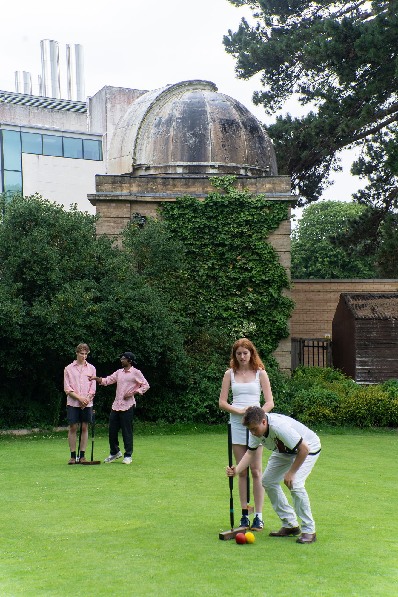

OUACC was founded in 1867. This section brings together the surviving record of the Club and of croquet at Oxford, including histories, archival extracts and contemporary research.
- A History of the Oxford University Croquet Club: 1867 to present day
- Early References to Oxford University Croquet Club: extracts from minute books of the University
- Listing of Croquet in Oxford from the Croquet Gazette from May 1904 to 1939